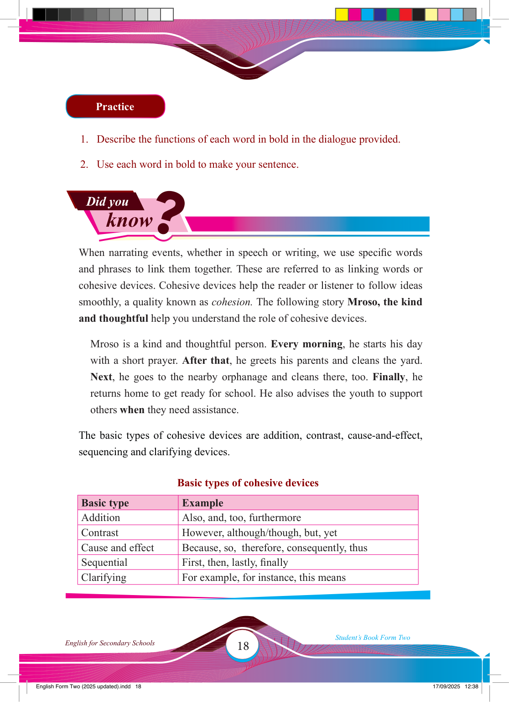

18
Student’s Book Form Two
English for Secondary Schools
Did you
know
?
Practice
1. Describe the functions of each word in bold in the dialogue provided.
2. Use each word in bold to make your sentence.
When narrating events, whether in speech or writing, we use specifi c words and phrases to link them together. These are referred to as linking words or cohesive devices. Cohesive devices help the reader or listener to follow ideas smoothly, a quality known as cohesion. The following story Mroso, the kind and thoughtful help you understand the role of cohesive devices.
Mroso is a kind and thoughtful person. Every morning, he starts his day with a short prayer. After that, he greets his parents and cleans the yard.
Next, he goes to the nearby orphanage and cleans there, too. Finally, he returns home to get ready for school. He also advises the youth to support others when they need assistance.
The basic types of cohesive devices are addition, contrast, cause-and-effect, sequencing and clarifying devices.
Basic types of cohesive devices
Basic type
Example
Addition
Also, and, too, furthermore
Contrast
However, although/though, but, yet
Cause and effect
Because, so, therefore, consequently, thus
Sequential
First, then, lastly, fi nally
Clarifying
For example, for instance, this means
17/09/2025 12:38